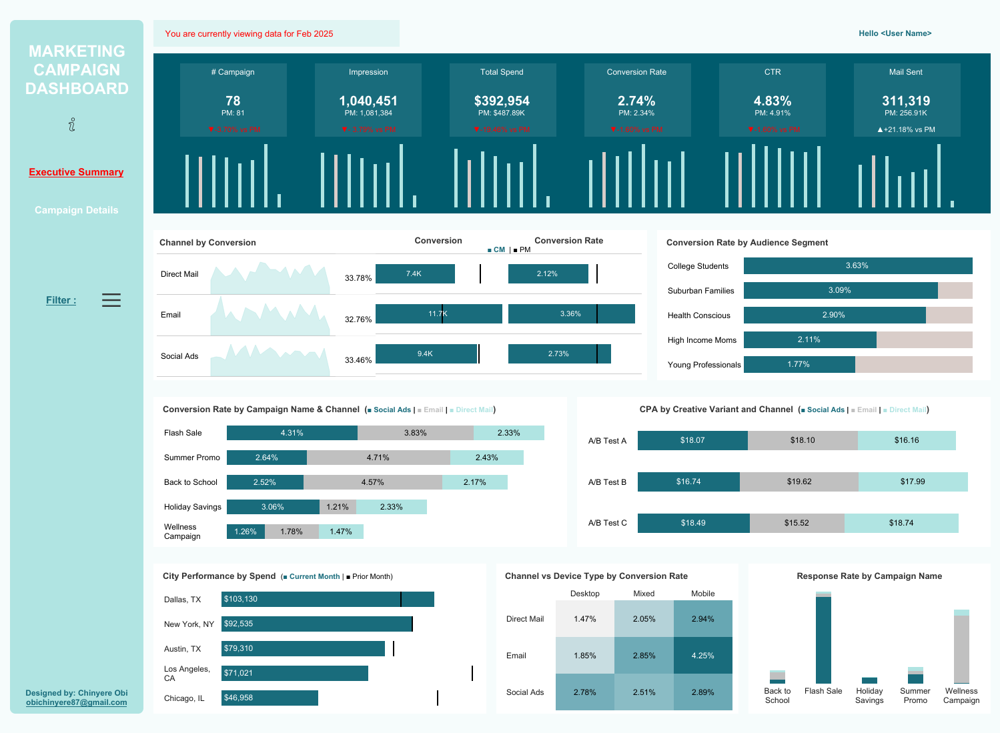

Marketing Campaign Dashboard
Executive Summary - High-level campaign performance metrics
Project Overview
This comprehensive marketing campaign dashboard provides executives and marketing teams with real-time insights into campaign performance across multiple channels. Built to track 78 campaigns generating over 1 million impressions and $392K in spend, the dashboard consolidates data from Email, Social Ads, and Direct Mail to provide a unified view of marketing effectiveness.
The two-page layout offers both executive-level summaries and detailed campaign analytics, enabling stakeholders to quickly assess performance while also drilling down into specific metrics like conversion rates by audience segment, CPA by creative variant, and geographical performance trends.
Dashboard Features
- Executive Summary Page: Top-level KPIs with PM (Previous Month) comparisons and trend sparklines
- Multi-Channel Analysis: Performance breakdown across Direct Mail, Email, and Social Ads
- Audience Segmentation: Conversion rates by demographic segments (College Students, Suburban Families, etc.)
- Campaign Performance: Detailed metrics for Flash Sale, Summer Promo, Back to School, and more
- Geographic Insights: City-level performance with spend tracking across Dallas, NYC, Austin, LA, and Chicago
- Creative Testing: CPA analysis across A/B/C test variants and channels
- Device Analytics: Conversion rate comparison across Desktop, Mobile, and Mixed devices
- Correlation Analysis: Scatter plot showing relationship between Campaign ID, Impressions, and Spend
- Response Rate Tracking: Campaign-specific response rates with visual comparison
Key Metrics Tracked
- Total Campaigns: 78 (PM: 81)
- Impressions: 1,040,451 (PM: 1,081,384)
- Total Spend: $392,954 (PM: $487.89K)
- Conversion Rate: 2.74% (PM: 2.34%)
- Click-Through Rate: 4.83% (PM: 4.91%)
- Mail Sent: 311,319 (PM: 255.91K, +21.18% vs PM)
Insights & Impact
The dashboard revealed that Email campaigns achieved the highest conversion volume (11.7K conversions at 3.36% rate), while Social Ads showed strong efficiency with 9.4K conversions. Audience segmentation analysis identified College Students as the highest-converting segment at 3.63%, providing clear targeting direction for future campaigns.
Geographic analysis showed Dallas, TX leading with $103,130 in spend, while creative testing demonstrated that A/B Test variant A achieved the best CPA at $16.16-$18.10 across channels. The Response Rate analysis highlighted "Back to School" and "Flash Sale" as the top-performing campaign types.
- Overview A dual-page marketing analytics dashboard providing comprehensive campaign performance tracking across multiple channels, audience segments, and geographic regions. Designed for executive reporting and detailed campaign optimization.
- Technologies Used Tableau Desktop, Calculated Fields, Parameters, Dashboard Actions, Color-Coded KPIs
- Dashboard Views Executive Summary (high-level KPIs with trend indicators), Campaign Details (granular analysis with correlation insights), Interactive filters for date ranges and campaign selection
- Key Metrics Campaign Count, Impressions, Total Spend, Conversion Rate, CTR, Mail Sent, Channel Performance, Audience Conversion Rates, CPA by Variant, Geographic Spend, Device Type Analysis, Response Rates
- Skills Demonstrated Multi-page dashboard design, KPI visualization with period-over-period comparisons, channel attribution analysis, audience segmentation analytics, geographic performance mapping, creative testing analysis, correlation analysis, data storytelling for marketing insights
- Business Value Enabled marketing leadership to identify top-performing channels (Email: 32.76% conversion rate), optimize budget allocation across 5 major cities, and improve campaign targeting based on audience segment performance. The dashboard consolidated data from multiple sources into a single source of truth for campaign performance.
- Design Approach Clean teal color scheme with red indicators for negative trends, responsive layout for executive briefings, strategic use of white space, intuitive navigation between summary and detail views